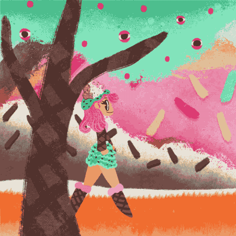

Maya Enfinger, Ice Cream Girl Walk Cycle, 2026, Digital Animation
This animation is a walk cycle I made in Procreate Dreams. A girl living in a desert world is walking in the woods with her little icecream chihuahua. I had so much fun making this animation but it was alot of work. I also wanted to add a layer of creepiness with the guarana eyes watching. Playing CandyLand as a child definitely inspired this animation.